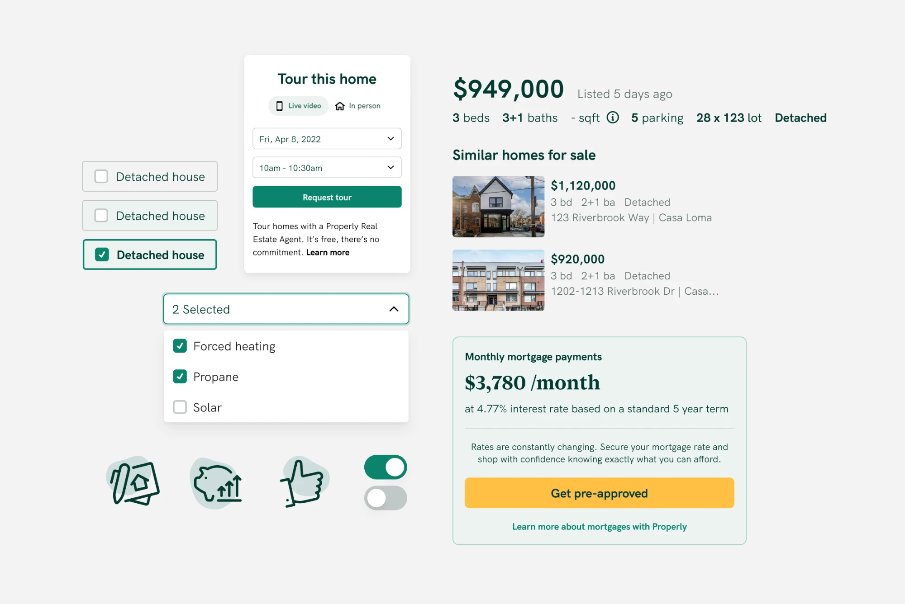
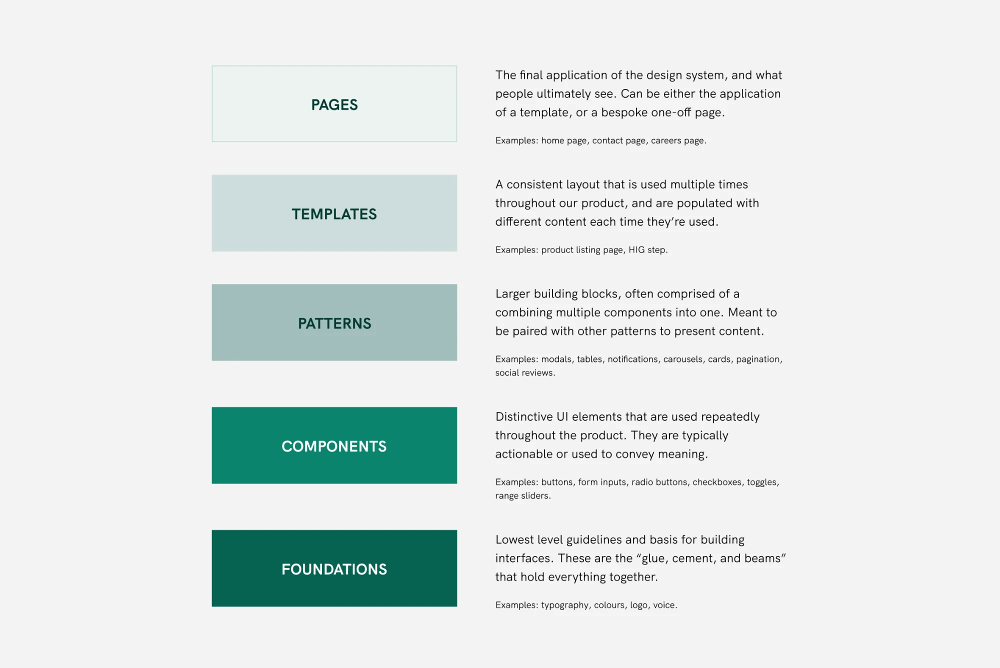
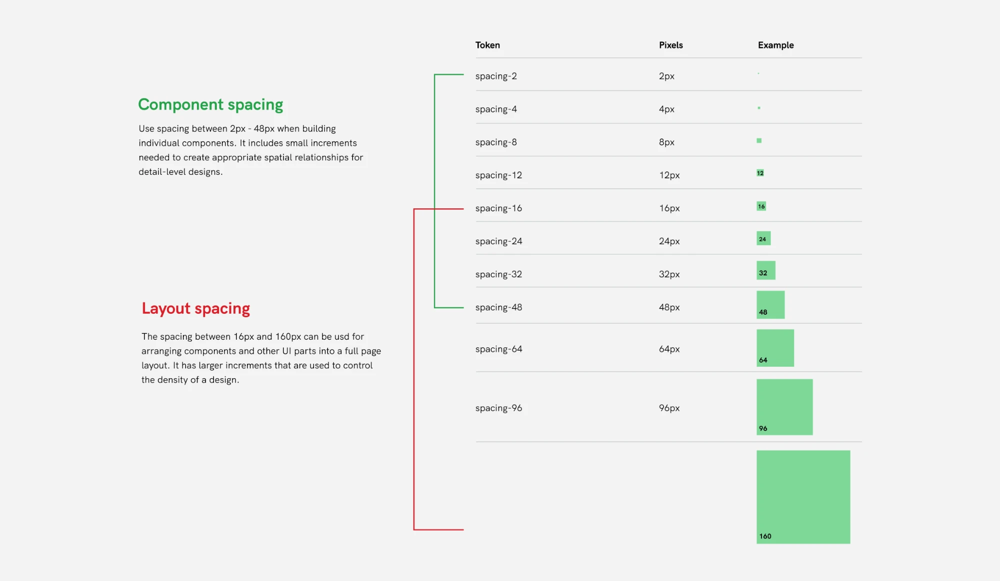
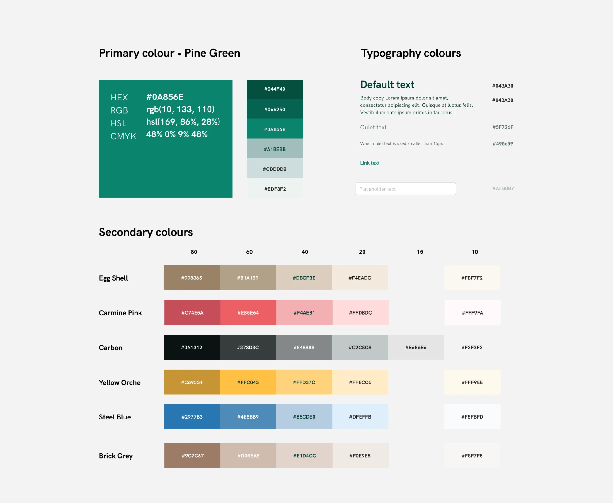
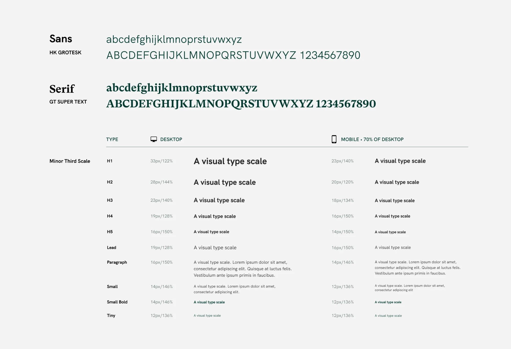
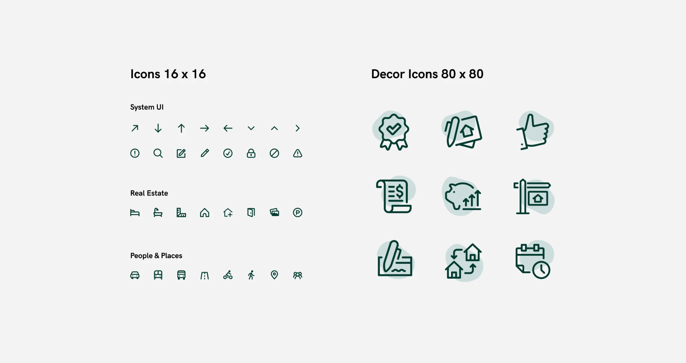
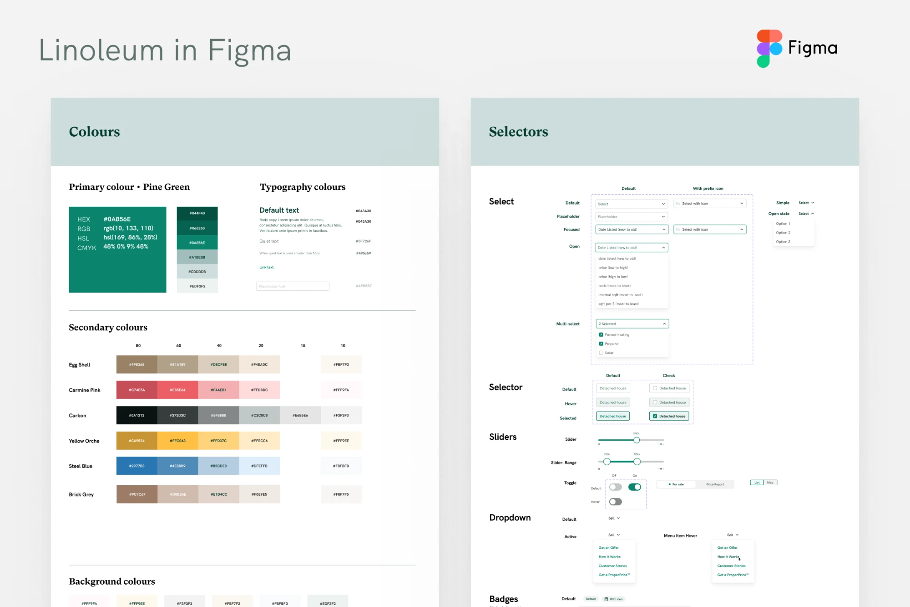
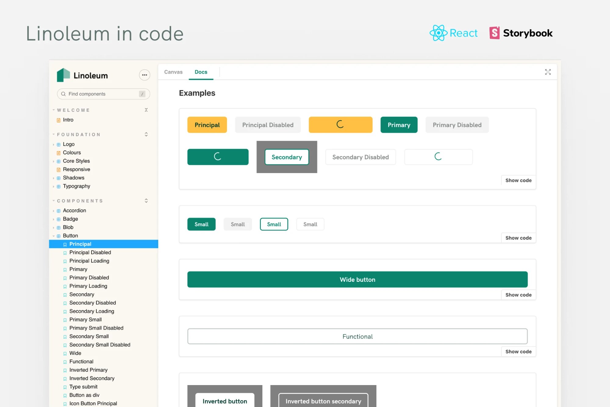

Design Systems
Linoleum, the Properly design system
A design system for consistency and speedy frontend development, named after ugly Calgary floors.
- Company
- Properly
- Year
- 2019 onward
- Role
- Product Designer
TL;DR
When I joined Properly, every component was bespoke. So we built Linoleum, one design system for design and engineering. It not only made frontend development significantly faster and created consistency across the product, it also became part of Properly’s culture.
My role
I was the first designer at Properly and began the journey of building the design system in mid 2019. Gabe (Design Lead) joined in Dec 2019, and the two of us continued to iterate and grow the system over the years.

Why Properly needed a design system
When I joined Properly, parts of the product were already built, but every component was bespoke. That made consistency hard to maintain, and changing a style across the product was a tedious task.
Even as a designer, I didn’t want to rebuild every component in Figma each time I designed something. So why would we make our engineers do it in code?
We also knew Properly’s product footprint would grow, so this was the time to lay proper foundations for it.

One system for design and engineering, built to grow
We built the entire system on an 8px grid, starting from the foundations and working upward from the lowest level.




Linoleum lived in two places: a design system in Figma for designers to use, and the components in code in Storybook for the development teams.


It was also an iterative process. We added more components, states, icons and other pieces as our own needs grew.
Linoleum also extended beyond the product to support marketing.
Linoleum was more than a design system, it was a cultural pillar
We collectively named the system Linoleum internally, since we saw a lot of ugly linoleum in the houses we were trying to sell in Calgary (our first city of operation), and it was an ironic name for a beautifully designed system.
Internally, folks really adopted the visual brand. Icons became memes, and the blob element became an inside joke of its own. Successful changes to the visual brand and system had to get cultural buy-in from the whole engineering team for full adoption.
Impact
“Once we had the storybook set up it made it infinitely easier to make sure every component we built in frontend was consistent with the brand. Also made developing frontend significantly faster because we basically had a ‘palette’ of existing pieces to choose from.”
“It was pretty big. It was right before design systems got super popular and everyone was doing them. It meant that everything was on a stable visual base. We were able to prototype things without [Sara] having to get involved in everything. [Sara] was able to spend more of her time doing higher level work. It also meant that when we wanted to update the appearance of things there was more or less one place that needed to change. Not having Linoleum felt really apparent when we started on the mobile app and it wasn’t around (we made a thing that looked like it but it wasn’t the same).”